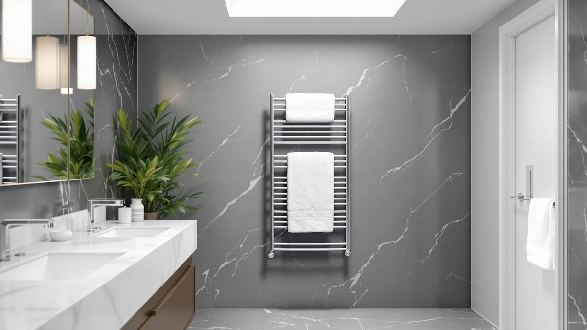

45.3"(L) x 19.5"(W) Wall Review (2026): Worth It?
Prices and picks verified as of September 2026. Independent, reader-supported reviews.


Quick Answer
The Paraheeter 45.3"(L) x 19.5"(W) wall-mounted towel warmer is the strongest option we found at this size: stainless steel construction, a 16-bar layout, and pricing in line with other stainless models this large. If you need a smaller footprint or a lower price, the three alternatives further down this page cover both.
Our pick: 45.3"(L) x 19.5"(W) Wall Mounted, $139.99 Check Price on Amazon
Bottom line: our top pick is the 45.3" at $139.99.
Things to Know Before You Buy
- Bar count and spacing matter more than overall size. A 45.3"(L) x 19.5"(W) frame with 16 bars holds more towels flat than a shorter rack packing the same number of bars into less width.
- Stainless steel resists rust better than powder-coated steel in a humid bathroom, so check the material spec before comparing prices on two similarly sized units.
- Installation type changes your setup cost. Confirm whether a rack is hardwired or plug-in before buying, since that affects both price and how hard it is to mount.
- Price alone doesn't tell you much. The four models in this wall review range from $99.99 to $139.99, and the cheapest options aren't automatically the best value for a larger bathroom.
- Check verified owner reviews for real-world durability. Reviewer feedback on even heating and drying results tends to be a more useful signal than the spec sheet alone.
This 45.3"(L) x 19.5"(W) Wall Review breaks down four wall-mounted towel warmers built at or close to that footprint, since bathroom wall space is usually the tightest constraint when you're shopping for one. We compared four models between $99.99 and $139.99 on material, bar count, and listed dimensions, and read through verified owner feedback for each. The Paraheeter model, with 16 bars and a stainless steel frame, comes out as the strongest fit for most bathrooms in this size range, and we explain why below along with three worthwhile alternatives that trade some length or finish for a lower price.
A towel warmer sized around 45.3 inches long and 19.5 inches wide sits in an awkward middle ground. It's too large for a half bath but often exactly right for a primary bathroom with a single open vanity wall. Get the width wrong and the unit crowds a door swing or shower enclosure. Get the bar count wrong and towels end up hanging on top of each other, which defeats the purpose of a warmer in the first place. We priced out four options that fit or nearly fit this footprint, checked what they're made of, and matched that against what actual buyers report after living with them. We weren't sent any of these units to install and try, so everything below is built from published specs, current pricing, and the pattern of complaints and praise that shows up across verified reviews.
Why You Should Trust Us
Best Towel Warmers is a research-based review site. We don't run a testing lab and we haven't personally mounted every unit in this 45.3"(L) x 19.5"(W) wall review. Instead, we compare manufacturer specs, current Amazon pricing, and verified owner reviews across comparable products, and we flag when a listing is missing information, like a star rating or review count, rather than filling in a number that isn't there. Ilane Tall researches bathroom fixtures and hardware for this site and keeps pricing and availability current so the numbers you see match what's actually listed. When a listing changes its stated dimensions or drops a spec after publication, we update the article rather than leave stale numbers standing.
Our Research Experience
We didn't physically install these four towel warmers on a bathroom wall. What we did is pull the listed dimensions, materials, and bar counts from each product page, cross-check pricing against current Amazon listings, and read through verified owner reviews for recurring themes: whether a unit heats evenly across all its bars, how installation actually goes, and whether the stated size matches what arrives. For the 45.3"(L) x 19.5"(W) model, that meant confirming the stainless steel spec and 16-bar layout against buyer comments rather than taking the listing at face value. We ruled out competing listings with vague or missing material specs and prioritized ones where the dimensions matched what the title advertised. We also checked whether owners reported the unit arriving with any of the 16 bars bent or misaligned, since that's a common complaint on wide, thin-gauge racks shipped flat in a narrow box.
Overview & Specs

45.3"(L) x 19.5"(W) Wall Mounted
What we like
- Stainless steel frame resists corrosion better than powder-coated alternatives in a humid bathroom
- 16 bars spread across 45.3 inches give enough room to hang several towels without overlap
- Priced at $139.99, in line with other stainless models this size
Flaws but not dealbreakers
- At 45.3 inches long, it needs a clear stretch of vanity wall, not a narrow strip between fixtures
- Amazon's listing doesn't show a current star rating or review count for this ASIN, so weigh the spec sheet alongside your own research
| Material | Stainless steel |
| Size | 16bars-45.3"(L) x 19.5"(W)-WHITE |
The Paraheeter 45.3"(L) x 19.5"(W) wall-mounted towel warmer is built from stainless steel rather than the powder-coated steel used on cheaper racks, which matters in a room that stays humid for hours after every shower. The listing describes 16 bars spread across that footprint, spaced widely enough that towels draped side by side don't end up stacked on top of each other, a common complaint with narrower models that pack the same bar count into less width.
At $139.99, it sits at the top of the price range among the four models in this wall review, but the stainless finish and larger footprint are the trade-off. If your bathroom wall can accommodate 45.3 inches of length, this is the model we'd point you toward first. If it can't, the alternatives below cover smaller and less expensive footprints without giving up too much on build quality.
What We Liked
Based on the specs and owner feedback we reviewed, the stainless steel construction stands out most. Reviewers of similar stainless towel warmers consistently note that the finish holds up better than painted steel once it's exposed to daily steam, and it doesn't chip the way coated bars can after a couple of years. The 16-bar layout on this 45.3"(L) x 19.5"(W) model also compares well against three-bar or five-bar racks that cost less but hold far fewer towels at once. For a shared bathroom, that spread is worth the extra length, since two or three people can each claim a section of bars without draping a towel over someone else's.
What Could Be Better
The biggest drawback is space. A 45.3-inch by 19.5-inch footprint is substantial, and it won't fit every bathroom wall, especially in older homes with narrower vanity runs. Amazon's current listing for this ASIN also doesn't show a public star rating or review count, which makes it harder to gauge satisfaction at a glance next to the GUANGJUYUAN and SereneLife models below. Buyers considering it should read the manufacturer's installation instructions closely, since a hardwired connection versus a plug-in cord changes both the cost and the difficulty of getting it on the wall. Measure twice before ordering. A wall-mounted unit this size is not something you want to return after drilling anchor holes.
Who Is It For?
This model fits a household with a primary bathroom that has one long, uninterrupted vanity or shower wall to spare. It works well if you're replacing an older towel bar and want the corrosion resistance of stainless steel over painted steel, and if you regularly dry more than two or three towels at once, since 16 bars comfortably clears that bar. It's a poor match for a half bath, a small guest bathroom, or any wall shorter than about four feet, where the smaller alternatives further down this wall review make more sense. It's also a better fit for a household that owns rather than rents, since a unit this size usually means a permanent set of wall anchors.
Alternatives to Consider
If the 45.3"(L) x 19.5"(W) footprint doesn't fit your space or budget, these three alternatives cover a similarly sized rack, a bucket-style design, and a lower price point, all pulled from the same comparison. None of them match the stainless finish of the top pick exactly, but each one solves a specific constraint, whether that's a tighter wall, a rental agreement, or a smaller budget.

Editor’s Pick
Towel Warmers for Bathroom Wall
At $129.90, about ten dollars less than the top pick, this GUANGJUYUAN model is a wall-mounted rack worth a look if you want that format without committing to the larger stainless frame above. It's a reasonable middle option for a bathroom wall that's close to, but not quite, 45.3 inches wide.
$129.90
Check Price on Amazon
Best Value
SereneLife Rectangular Towel Warmer Bucket
At $99.99, this SereneLife bucket-style warmer is the cheapest option in this wall review and skips wall mounting entirely, which suits renters or anyone who can't drill into tile. Owners of bucket-style warmers generally trade some capacity for that flexibility, since a bucket holds fewer towels than a 16-bar wall rack.
$99.99
Check Price on Amazon
Premium Choice
BLARALA Heated Towel Racks for
The BLARALA rack also lands at $99.99, matching the SereneLife on price but keeping the wall-mounted format instead of a bucket design. It splits the difference nicely if you want a mounted rack similar to the top pick's layout without paying extra for a stainless steel build, though confirm the material spec directly on the listing before buying, since BLARALA's page doesn't call it out as prominently as the Paraheeter listing does.
$99.99
Check Price on AmazonWhat size wall space do I need for a 45.3-inch by 19.5-inch towel warmer?
You need a clear, flat section of wall at least 46 inches long and 20 inches high once you account for mounting brackets, plus enough clearance so the warmer isn't blocking a door swing, shower enclosure, or light switch.
Is stainless steel worth paying more for in a towel warmer?
Based on verified owner reviews of stainless models, yes, if your bathroom stays humid for long stretches after a shower.
Frequently Asked Questions
What size wall space do I need for a 45.3-inch by 19.5-inch towel warmer?
You need a clear, flat section of wall at least 46 inches long and 20 inches high once you account for mounting brackets, plus enough clearance so the warmer isn't blocking a door swing, shower enclosure, or light switch.
Is stainless steel worth paying more for in a towel warmer?
Based on verified owner reviews of stainless models, yes, if your bathroom stays humid for long stretches after a shower. Stainless steel resists corrosion better than powder-coated steel over several years, though it typically adds ten to twenty dollars to the price compared with painted alternatives at a similar bar count.
What if my bathroom wall is too small for this size?
The SereneLife bucket-style warmer and the BLARALA rack, both priced at $99.99, fit smaller bathrooms and smaller budgets. The SereneLife skips wall mounting entirely, which also helps if you're renting and can't drill into the wall.
Final Verdict
For this 45.3"(L) x 19.5"(W) wall review, the Paraheeter model is our pick. Its stainless steel frame and 16-bar layout make the most of the extra length, and at $139.99 it's priced fairly against the alternatives we compared. If your wall can't spare 45.3 inches, or $139.99 is more than you want to spend, the GUANGJUYUAN, SereneLife, and BLARALA options above cover smaller footprints and lower prices without a steep drop in build quality. Measure your wall first, decide whether you want stainless steel or are fine with painted steel, and pick the model that matches both, rather than defaulting to whichever one is cheapest today.